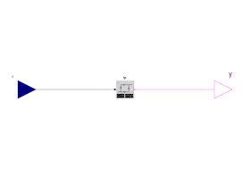

It has the following parameters:
| Type | Name | Default | Description |
|---|---|---|---|
| General | |||
| Parameters | |||
| Real | uLow |
0.5 | if y=true and u<uLow, switch to y=false [Min = 0 ] |
| Real | uHigh |
2*uLow | if y=false and u>uHigh, switch to y=true |
It has the following inputs:
| Type | Name | Description |
|---|---|---|
Real
|
u |
Real input signal |
It has the following outputs:
| Type | Name | Description |
|---|---|---|
Boolean |
y |
Boolean output signal |
It has the following blocks:
| Type | Name | Description | Parameter Assignments |
|---|---|---|---|
Buildings.Controls.OBC.CDL.Continuous.Hysteresis |
hys |
Example for real parameter evaluation |
|
It has the following IO points:
| System/Equipment | Name | Type | Hardwired? | Trend [s] | Description |
|---|---|---|---|---|---|
| Not_specified | u | AI | No | n/a | Real input signal |
| Not_specified | y | BO | No | n/a | Boolean output signal |
The inputs of the internal blocks are connected to the following outputs:
